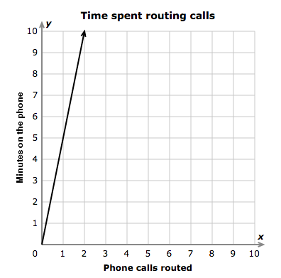

Eighth Grade Math Test
This graph shows how the amount of time that a receptionist named Gwen spends on the phone is related to the number of phone calls she routes to employees.

What is the constant of variation?